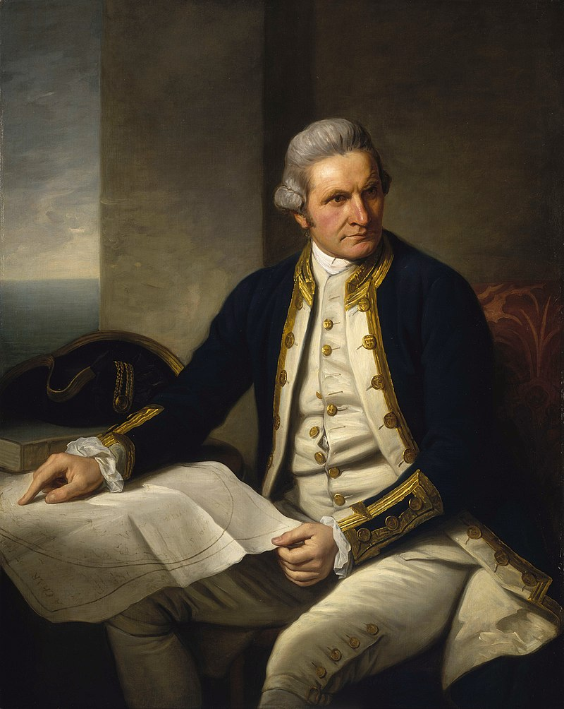
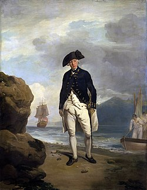

Austrālijas vēsture
Šajā vietnē jūs uzzināsiet īsu Austrālijas
vēsturi no aborigēnu laikiem līdz mūsdienām
Šajā vietnē jūs uzzināsiet īsu Austrālijas
vēsturi no aborigēnu laikiem līdz mūsdienām
Pirms eiropiešu ierašanās Austrālijā aborigēniem, kuri kontinentā
dzīvoja vairāk nekā 60 tūkstošus gadu, bija sava unikāla kultūra,
tradīcijas un attīstīta pārvaldības sistēma.
Viņu dzīvesveids bija harmoniski saistīts ar dabu: medības, augļu vākšana un makšķerēšana bija viņu ikdienas neatņemama sastāvdaļa.
Austrāliešu aborigēni ir saskārušies ar Eiropas kolonizācijas
traģiskajām sekām, tostarp iedzīvotāju skaita samazināšanos,
tradicionālo zemju un kultūras vērtību zaudēšanu, kā arī
diskrimināciju un sociālo atstumtību.
Austrālijas kolonizācija sākās ar pirmo eiropiešu ierašanos kontinentā 1788. gadā

1770. gadā kapteinis Džeimss Kuks atklāj Austrālijas austrumu krastu un pieprasīja to Lielbritānijai.


Pirmā kolonija bija Jaundienvidvelsa,
kuru dibināja kapteinis Arturs Filips.
Kolonisti centās izmantot Austrālijas bagātos resursus, piemēram,
vilnu, zeltu un ogles savai ekonomiskajai attīstībai.
*Nospiediet uz ikonām lējā*
.png)
19. gadsimta beigās Austrālijā radās ideja par koloniju federācijas izveidi. Austrālijas neatkarību Lielbritānija formāli atzina tikai 1942. gadā, kad Austrālijas karaspēks piedalījās Otrajā pasaules karā Antihitlera koalīcijas pusē. 1947. gadā Austrālija kļuva par Britu Nāciju Savienības dibinātāju.
Koloniju apvienošanas kustība sākās 19. gadsimta vidū, un to sauca par "federālismu".Šīs kustības pārstāvji iestājās par koloniju apvienošanu vienā valstī ar centralizētu valdību un kopēju likumdošanu.
Viena no ievērojamākajām federālisma figūrām bija sabiedriskais darbinieks un politiķis Henrijs Pārkss. Austrālijas galīgā neatkarība tika pasludināta 1986. gada 3. martā.
.png)
.png)
.png)
Mūsdienu Austrālija ir augsti attīstīta valsts dienvidu puslodē,
kas ir viena no līderēm reģiona ekonomiskajā, kultūras un
politiskajā jomā
Mūsdienās Austrālija ir viena no pasaules
pārtikušākajām ekonomikām un ir daudzu starptautisku
organizāciju, piemēram, ANO, Starptautiskā Valūtas
fonda un Pasaules Tirdzniecības organizācijas locekle.
Novietojiet kursoru uz attēliem
Austrālija ir pazīstama ar savu kultūru un dabu, kas piesaista tūristus no visas pasaules.
Jums būs 5 minūtes, lai izpētītu tīmekļa vietnē esošo materiālu.
Tiklīdz noklikšķināsiet uz pogas Sākt, taimeris sāks atpakaļskaitīšanu.
Kad laiks būs beidzies, jūs tiksit novirzīts uz lapu ar materiāla pārbaudes jautājumiem.